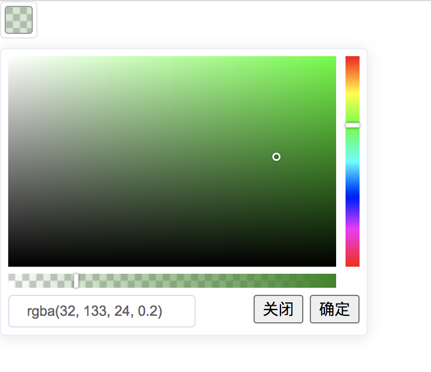

# 不想引vue了 所以抄了一遍 el-color-picker
colorPicker.js (编译好的)
var colorPicker =
/******/ (function(modules) { // webpackBootstrap
/******/ // The module cache
/******/ var installedModules = {};
/******/
/******/ // The require function
/******/ function __webpack_require__(moduleId) {
/******/
/******/ // Check if module is in cache
/******/ if(installedModules[moduleId])
/******/ return installedModules[moduleId].exports;
/******/
/******/ // Create a new module (and put it into the cache)
/******/ var module = installedModules[moduleId] = {
/******/ i: moduleId,
/******/ l: false,
/******/ exports: {}
/******/ };
/******/
/******/ // Execute the module function
/******/ modules[moduleId].call(module.exports, module, module.exports, __webpack_require__);
/******/
/******/ // Flag the module as loaded
/******/ module.l = true;
/******/
/******/ // Return the exports of the module
/******/ return module.exports;
/******/ }
/******/
/******/
/******/ // expose the modules object (__webpack_modules__)
/******/ __webpack_require__.m = modules;
/******/
/******/ // expose the module cache
/******/ __webpack_require__.c = installedModules;
/******/
/******/ // identity function for calling harmony imports with the correct context
/******/ __webpack_require__.i = function(value) { return value; };
/******/
/******/ // define getter function for harmony exports
/******/ __webpack_require__.d = function(exports, name, getter) {
/******/ if(!__webpack_require__.o(exports, name)) {
/******/ Object.defineProperty(exports, name, {
/******/ configurable: false,
/******/ enumerable: true,
/******/ get: getter
/******/ });
/******/ }
/******/ };
/******/
/******/ // getDefaultExport function for compatibility with non-harmony modules
/******/ __webpack_require__.n = function(module) {
/******/ var getter = module && module.__esModule ?
/******/ function getDefault() { return module['default']; } :
/******/ function getModuleExports() { return module; };
/******/ __webpack_require__.d(getter, 'a', getter);
/******/ return getter;
/******/ };
/******/
/******/ // Object.prototype.hasOwnProperty.call
/******/ __webpack_require__.o = function(object, property) { return Object.prototype.hasOwnProperty.call(object, property); };
/******/
/******/ // __webpack_public_path__
/******/ __webpack_require__.p = "";
/******/
/******/ // Load entry module and return exports
/******/ return __webpack_require__(__webpack_require__.s = 74);
/******/ })
/************************************************************************/
/******/ ([
/* 0 */
/***/ (function(module, exports) {
// https://github.com/zloirock/core-js/issues/86#issuecomment-115759028
var global = module.exports = typeof window != 'undefined' && window.Math == Math
? window : typeof self != 'undefined' && self.Math == Math ? self
// eslint-disable-next-line no-new-func
: Function('return this')();
if (typeof __g == 'number') __g = global; // eslint-disable-line no-undef
/***/ }),
/* 1 */
/***/ (function(module, exports, __webpack_require__) {
// Thank's IE8 for his funny defineProperty
module.exports = !__webpack_require__(10)(function () {
return Object.defineProperty({}, 'a', { get: function () { return 7; } }).a != 7;
});
/***/ }),
/* 2 */
/***/ (function(module, exports) {
var hasOwnProperty = {}.hasOwnProperty;
module.exports = function (it, key) {
return hasOwnProperty.call(it, key);
};
/***/ }),
/* 3 */
/***/ (function(module, exports, __webpack_require__) {
var anObject = __webpack_require__(9);
var IE8_DOM_DEFINE = __webpack_require__(29);
var toPrimitive = __webpack_require__(24);
var dP = Object.defineProperty;
exports.f = __webpack_require__(1) ? Object.defineProperty : function defineProperty(O, P, Attributes) {
anObject(O);
P = toPrimitive(P, true);
anObject(Attributes);
if (IE8_DOM_DEFINE) try {
return dP(O, P, Attributes);
} catch (e) { /* empty */ }
if ('get' in Attributes || 'set' in Attributes) throw TypeError('Accessors not supported!');
if ('value' in Attributes) O[P] = Attributes.value;
return O;
};
/***/ }),
/* 4 */
/***/ (function(module, exports, __webpack_require__) {
var dP = __webpack_require__(3);
var createDesc = __webpack_require__(12);
module.exports = __webpack_require__(1) ? function (object, key, value) {
return dP.f(object, key, createDesc(1, value));
} : function (object, key, value) {
object[key] = value;
return object;
};
/***/ }),
/* 5 */
/***/ (function(module, exports, __webpack_require__) {
// to indexed object, toObject with fallback for non-array-like ES3 strings
var IObject = __webpack_require__(54);
var defined = __webpack_require__(14);
module.exports = function (it) {
return IObject(defined(it));
};
/***/ }),
/* 6 */
/***/ (function(module, exports, __webpack_require__) {
var store = __webpack_require__(22)('wks');
var uid = __webpack_require__(13);
var Symbol = __webpack_require__(0).Symbol;
var USE_SYMBOL = typeof Symbol == 'function';
var $exports = module.exports = function (name) {
return store[name] || (store[name] =
USE_SYMBOL && Symbol[name] || (USE_SYMBOL ? Symbol : uid)('Symbol.' + name));
};
$exports.store = store;
/***/ }),
/* 7 */
/***/ (function(module, exports) {
var core = module.exports = { version: '2.6.12' };
if (typeof __e == 'number') __e = core; // eslint-disable-line no-undef
/***/ }),
/* 8 */
/***/ (function(module, exports) {
module.exports = function (it) {
return typeof it === 'object' ? it !== null : typeof it === 'function';
};
/***/ }),
/* 9 */
/***/ (function(module, exports, __webpack_require__) {
var isObject = __webpack_require__(8);
module.exports = function (it) {
if (!isObject(it)) throw TypeError(it + ' is not an object!');
return it;
};
/***/ }),
/* 10 */
/***/ (function(module, exports) {
module.exports = function (exec) {
try {
return !!exec();
} catch (e) {
return true;
}
};
/***/ }),
/* 11 */
/***/ (function(module, exports) {
module.exports = true;
/***/ }),
/* 12 */
/***/ (function(module, exports) {
module.exports = function (bitmap, value) {
return {
enumerable: !(bitmap & 1),
configurable: !(bitmap & 2),
writable: !(bitmap & 4),
value: value
};
};
/***/ }),
/* 13 */
/***/ (function(module, exports) {
var id = 0;
var px = Math.random();
module.exports = function (key) {
return 'Symbol('.concat(key === undefined ? '' : key, ')_', (++id + px).toString(36));
};
/***/ }),
/* 14 */
/***/ (function(module, exports) {
// 7.2.1 RequireObjectCoercible(argument)
module.exports = function (it) {
if (it == undefined) throw TypeError("Can't call method on " + it);
return it;
};
/***/ }),
/* 15 */
/***/ (function(module, exports) {
// IE 8- don't enum bug keys
module.exports = (
'constructor,hasOwnProperty,isPrototypeOf,propertyIsEnumerable,toLocaleString,toString,valueOf'
).split(',');
/***/ }),
/* 16 */
/***/ (function(module, exports, __webpack_require__) {
var global = __webpack_require__(0);
var core = __webpack_require__(7);
var ctx = __webpack_require__(51);
var hide = __webpack_require__(4);
var has = __webpack_require__(2);
var PROTOTYPE = 'prototype';
var $export = function (type, name, source) {
var IS_FORCED = type & $export.F;
var IS_GLOBAL = type & $export.G;
var IS_STATIC = type & $export.S;
var IS_PROTO = type & $export.P;
var IS_BIND = type & $export.B;
var IS_WRAP = type & $export.W;
var exports = IS_GLOBAL ? core : core[name] || (core[name] = {});
var expProto = exports[PROTOTYPE];
var target = IS_GLOBAL ? global : IS_STATIC ? global[name] : (global[name] || {})[PROTOTYPE];
var key, own, out;
if (IS_GLOBAL) source = name;
for (key in source) {
// contains in native
own = !IS_FORCED && target && target[key] !== undefined;
if (own && has(exports, key)) continue;
// export native or passed
out = own ? target[key] : source[key];
// prevent global pollution for namespaces
exports[key] = IS_GLOBAL && typeof target[key] != 'function' ? source[key]
// bind timers to global for call from export context
: IS_BIND && own ? ctx(out, global)
// wrap global constructors for prevent change them in library
: IS_WRAP && target[key] == out ? (function (C) {
var F = function (a, b, c) {
if (this instanceof C) {
switch (arguments.length) {
case 0: return new C();
case 1: return new C(a);
case 2: return new C(a, b);
} return new C(a, b, c);
} return C.apply(this, arguments);
};
F[PROTOTYPE] = C[PROTOTYPE];
return F;
// make static versions for prototype methods
})(out) : IS_PROTO && typeof out == 'function' ? ctx(Function.call, out) : out;
// export proto methods to core.%CONSTRUCTOR%.methods.%NAME%
if (IS_PROTO) {
(exports.virtual || (exports.virtual = {}))[key] = out;
// export proto methods to core.%CONSTRUCTOR%.prototype.%NAME%
if (type & $export.R && expProto && !expProto[key]) hide(expProto, key, out);
}
}
};
// type bitmap
$export.F = 1; // forced
$export.G = 2; // global
$export.S = 4; // static
$export.P = 8; // proto
$export.B = 16; // bind
$export.W = 32; // wrap
$export.U = 64; // safe
$export.R = 128; // real proto method for `library`
module.exports = $export;
/***/ }),
/* 17 */
/***/ (function(module, exports) {
module.exports = {};
/***/ }),
/* 18 */
/***/ (function(module, exports, __webpack_require__) {
// 19.1.2.14 / 15.2.3.14 Object.keys(O)
var $keys = __webpack_require__(34);
var enumBugKeys = __webpack_require__(15);
module.exports = Object.keys || function keys(O) {
return $keys(O, enumBugKeys);
};
/***/ }),
/* 19 */
/***/ (function(module, exports) {
exports.f = {}.propertyIsEnumerable;
/***/ }),
/* 20 */
/***/ (function(module, exports, __webpack_require__) {
var def = __webpack_require__(3).f;
var has = __webpack_require__(2);
var TAG = __webpack_require__(6)('toStringTag');
module.exports = function (it, tag, stat) {
if (it && !has(it = stat ? it : it.prototype, TAG)) def(it, TAG, { configurable: true, value: tag });
};
/***/ }),
/* 21 */
/***/ (function(module, exports, __webpack_require__) {
var shared = __webpack_require__(22)('keys');
var uid = __webpack_require__(13);
module.exports = function (key) {
return shared[key] || (shared[key] = uid(key));
};
/***/ }),
/* 22 */
/***/ (function(module, exports, __webpack_require__) {
var core = __webpack_require__(7);
var global = __webpack_require__(0);
var SHARED = '__core-js_shared__';
var store = global[SHARED] || (global[SHARED] = {});
(module.exports = function (key, value) {
return store[key] || (store[key] = value !== undefined ? value : {});
})('versions', []).push({
version: core.version,
mode: __webpack_require__(11) ? 'pure' : 'global',
copyright: '© 2020 Denis Pushkarev (zloirock.ru)'
});
/***/ }),
/* 23 */
/***/ (function(module, exports) {
// 7.1.4 ToInteger
var ceil = Math.ceil;
var floor = Math.floor;
module.exports = function (it) {
return isNaN(it = +it) ? 0 : (it > 0 ? floor : ceil)(it);
};
/***/ }),
/* 24 */
/***/ (function(module, exports, __webpack_require__) {
// 7.1.1 ToPrimitive(input [, PreferredType])
var isObject = __webpack_require__(8);
// instead of the ES6 spec version, we didn't implement @@toPrimitive case
// and the second argument - flag - preferred type is a string
module.exports = function (it, S) {
if (!isObject(it)) return it;
var fn, val;
if (S && typeof (fn = it.toString) == 'function' && !isObject(val = fn.call(it))) return val;
if (typeof (fn = it.valueOf) == 'function' && !isObject(val = fn.call(it))) return val;
if (!S && typeof (fn = it.toString) == 'function' && !isObject(val = fn.call(it))) return val;
throw TypeError("Can't convert object to primitive value");
};
/***/ }),
/* 25 */
/***/ (function(module, exports, __webpack_require__) {
var global = __webpack_require__(0);
var core = __webpack_require__(7);
var LIBRARY = __webpack_require__(11);
var wksExt = __webpack_require__(26);
var defineProperty = __webpack_require__(3).f;
module.exports = function (name) {
var $Symbol = core.Symbol || (core.Symbol = LIBRARY ? {} : global.Symbol || {});
if (name.charAt(0) != '_' && !(name in $Symbol)) defineProperty($Symbol, name, { value: wksExt.f(name) });
};
/***/ }),
/* 26 */
/***/ (function(module, exports, __webpack_require__) {
exports.f = __webpack_require__(6);
/***/ }),
/* 27 */
/***/ (function(module, exports) {
var toString = {}.toString;
module.exports = function (it) {
return toString.call(it).slice(8, -1);
};
/***/ }),
/* 28 */
/***/ (function(module, exports, __webpack_require__) {
var isObject = __webpack_require__(8);
var document = __webpack_require__(0).document;
// typeof document.createElement is 'object' in old IE
var is = isObject(document) && isObject(document.createElement);
module.exports = function (it) {
return is ? document.createElement(it) : {};
};
/***/ }),
/* 29 */
/***/ (function(module, exports, __webpack_require__) {
module.exports = !__webpack_require__(1) && !__webpack_require__(10)(function () {
return Object.defineProperty(__webpack_require__(28)('div'), 'a', { get: function () { return 7; } }).a != 7;
});
/***/ }),
/* 30 */
/***/ (function(module, exports, __webpack_require__) {
"use strict";
var LIBRARY = __webpack_require__(11);
var $export = __webpack_require__(16);
var redefine = __webpack_require__(35);
var hide = __webpack_require__(4);
var Iterators = __webpack_require__(17);
var $iterCreate = __webpack_require__(56);
var setToStringTag = __webpack_require__(20);
var getPrototypeOf = __webpack_require__(62);
var ITERATOR = __webpack_require__(6)('iterator');
var BUGGY = !([].keys && 'next' in [].keys()); // Safari has buggy iterators w/o `next`
var FF_ITERATOR = '@@iterator';
var KEYS = 'keys';
var VALUES = 'values';
var returnThis = function () { return this; };
module.exports = function (Base, NAME, Constructor, next, DEFAULT, IS_SET, FORCED) {
$iterCreate(Constructor, NAME, next);
var getMethod = function (kind) {
if (!BUGGY && kind in proto) return proto[kind];
switch (kind) {
case KEYS: return function keys() { return new Constructor(this, kind); };
case VALUES: return function values() { return new Constructor(this, kind); };
} return function entries() { return new Constructor(this, kind); };
};
var TAG = NAME + ' Iterator';
var DEF_VALUES = DEFAULT == VALUES;
var VALUES_BUG = false;
var proto = Base.prototype;
var $native = proto[ITERATOR] || proto[FF_ITERATOR] || DEFAULT && proto[DEFAULT];
var $default = $native || getMethod(DEFAULT);
var $entries = DEFAULT ? !DEF_VALUES ? $default : getMethod('entries') : undefined;
var $anyNative = NAME == 'Array' ? proto.entries || $native : $native;
var methods, key, IteratorPrototype;
// Fix native
if ($anyNative) {
IteratorPrototype = getPrototypeOf($anyNative.call(new Base()));
if (IteratorPrototype !== Object.prototype && IteratorPrototype.next) {
// Set @@toStringTag to native iterators
setToStringTag(IteratorPrototype, TAG, true);
// fix for some old engines
if (!LIBRARY && typeof IteratorPrototype[ITERATOR] != 'function') hide(IteratorPrototype, ITERATOR, returnThis);
}
}
// fix Array#{values, @@iterator}.name in V8 / FF
if (DEF_VALUES && $native && $native.name !== VALUES) {
VALUES_BUG = true;
$default = function values() { return $native.call(this); };
}
// Define iterator
if ((!LIBRARY || FORCED) && (BUGGY || VALUES_BUG || !proto[ITERATOR])) {
hide(proto, ITERATOR, $default);
}
// Plug for library
Iterators[NAME] = $default;
Iterators[TAG] = returnThis;
if (DEFAULT) {
methods = {
values: DEF_VALUES ? $default : getMethod(VALUES),
keys: IS_SET ? $default : getMethod(KEYS),
entries: $entries
};
if (FORCED) for (key in methods) {
if (!(key in proto)) redefine(proto, key, methods[key]);
} else $export($export.P + $export.F * (BUGGY || VALUES_BUG), NAME, methods);
}
return methods;
};
/***/ }),
/* 31 */
/***/ (function(module, exports, __webpack_require__) {
// 19.1.2.2 / 15.2.3.5 Object.create(O [, Properties])
var anObject = __webpack_require__(9);
var dPs = __webpack_require__(59);
var enumBugKeys = __webpack_require__(15);
var IE_PROTO = __webpack_require__(21)('IE_PROTO');
var Empty = function () { /* empty */ };
var PROTOTYPE = 'prototype';
// Create object with fake `null` prototype: use iframe Object with cleared prototype
var createDict = function () {
// Thrash, waste and sodomy: IE GC bug
var iframe = __webpack_require__(28)('iframe');
var i = enumBugKeys.length;
var lt = '<';
var gt = '>';
var iframeDocument;
iframe.style.display = 'none';
__webpack_require__(53).appendChild(iframe);
iframe.src = 'javascript:'; // eslint-disable-line no-script-url
// createDict = iframe.contentWindow.Object;
// html.removeChild(iframe);
iframeDocument = iframe.contentWindow.document;
iframeDocument.open();
iframeDocument.write(lt + 'script' + gt + 'document.F=Object' + lt + '/script' + gt);
iframeDocument.close();
createDict = iframeDocument.F;
while (i--) delete createDict[PROTOTYPE][enumBugKeys[i]];
return createDict();
};
module.exports = Object.create || function create(O, Properties) {
var result;
if (O !== null) {
Empty[PROTOTYPE] = anObject(O);
result = new Empty();
Empty[PROTOTYPE] = null;
// add "__proto__" for Object.getPrototypeOf polyfill
result[IE_PROTO] = O;
} else result = createDict();
return Properties === undefined ? result : dPs(result, Properties);
};
/***/ }),
/* 32 */
/***/ (function(module, exports, __webpack_require__) {
// 19.1.2.7 / 15.2.3.4 Object.getOwnPropertyNames(O)
var $keys = __webpack_require__(34);
var hiddenKeys = __webpack_require__(15).concat('length', 'prototype');
exports.f = Object.getOwnPropertyNames || function getOwnPropertyNames(O) {
return $keys(O, hiddenKeys);
};
/***/ }),
/* 33 */
/***/ (function(module, exports) {
exports.f = Object.getOwnPropertySymbols;
/***/ }),
/* 34 */
/***/ (function(module, exports, __webpack_require__) {
var has = __webpack_require__(2);
var toIObject = __webpack_require__(5);
var arrayIndexOf = __webpack_require__(50)(false);
var IE_PROTO = __webpack_require__(21)('IE_PROTO');
module.exports = function (object, names) {
var O = toIObject(object);
var i = 0;
var result = [];
var key;
for (key in O) if (key != IE_PROTO) has(O, key) && result.push(key);
// Don't enum bug & hidden keys
while (names.length > i) if (has(O, key = names[i++])) {
~arrayIndexOf(result, key) || result.push(key);
}
return result;
};
/***/ }),
/* 35 */
/***/ (function(module, exports, __webpack_require__) {
module.exports = __webpack_require__(4);
/***/ }),
/* 36 */
/***/ (function(module, exports, __webpack_require__) {
// 7.1.13 ToObject(argument)
var defined = __webpack_require__(14);
module.exports = function (it) {
return Object(defined(it));
};
/***/ }),
/* 37 */
/***/ (function(module, exports, __webpack_require__) {
"use strict";
Object.defineProperty(exports, "__esModule", {
value: true
});
exports.default = JDMapColorPicker;
var _color = __webpack_require__(38);
var _color2 = _interopRequireDefault(_color);
function _interopRequireDefault(obj) { return obj && obj.__esModule ? obj : { default: obj }; }
function JDMapColorPicker(options) {
this.options = {
"el": document.body,
color: "rgba(104, 195, 145, 0.8)",
callBack: function callBack(v) {}
};
this.color = null;
this.elKey = parseInt(Math.random() * 1000000000);
options && this.extend(this.options, options);
this.options.el.innerHTML = this.createDom();
this.regEvent();
}
JDMapColorPicker.prototype.extend = function (o, n) {
for (var i in n) {
o[i] = n[i];
}
};
JDMapColorPicker.prototype.addEvent = function (target, eventType, handle) {
if (target.addEventListener) {
target.addEventListener(eventType, handle, false);
} else {
target.attachEvent("on" + eventType, function () {
handle.call(target, arguments);
});
}
};
JDMapColorPicker.prototype.removeEvent = function (target, eventType, handle) {
if (target.removeEventListener) {
target.removeEventListener(eventType, handle, false);
} else if (target.detachEvent) {
target.detachEvent("on" + eventType, handle);
}
};
JDMapColorPicker.prototype.createDom = function () {
return '<div class="JDMap-color-picker">\
<div class="JDMap-color-picker__trigger" id="JDMap-color-picker__trigger_' + this.elKey + '">\
<span class="JDMap-color-picker__color is-alpha">\
<span class="JDMap-color-picker__color-inner" id="JDMap-color-picker__color-inner_' + this.elKey + '" style="background-color: rgba(19, 206, 102, 0.8);"></span>\
</span>\
</div>\
' + this.dropdown() + '\
</div>';
};
JDMapColorPicker.prototype.dropdown = function () {
return '<div class="JDMap-color-dropdown JDMap-color-picker__panel" id="JDMap-color-dropdown_' + this.elKey + '" x-placement="bottom">\
<div class="JDMap-color-dropdown__main-wrapper">\
<div class="JDMap-color-hue-slider is-vertical" id="JDMap-color-hue-slider_' + this.elKey + '" style="float: right;">\
<div class="JDMap-color-hue-slider__bar" id="JDMap-color-hue-slider__bar_' + this.elKey + '"></div>\
<div class="JDMap-color-hue-slider__thumb" id="JDMap-color-hue-slider__thumb_' + this.elKey + '" style="left: 0px; top: 10px;pointer-events: none;"></div>\
</div>\
<div class="JDMap-color-svpanel" id="JDMap-color-svpanel_' + this.elKey + '" style="background-color: rgb(0, 255, 113);">\
<div class="JDMap-color-svpanel__white"></div>\
<div class="JDMap-color-svpanel__black"></div>\
<div class="JDMap-color-svpanel__cursor" id="JDMap-color-svpanel__cursor_' + this.elKey + '" style="top: 34.5882px; left: 254.175px;"><div>\
</div></div></div></div>\
<div class="JDMap-color-alpha-slider" id="JDMap-color-alpha-slider_' + this.elKey + '">\
<div class="JDMap-color-alpha-slider__bar" id="JDMap-color-alpha-slider__bar_' + this.elKey + '" style="background: linear-gradient(to right, rgba(19, 206, 102, 0) 0%, rgb(19, 206, 102) 100%);"></div>\
<div class="JDMap-color-alpha-slider__thumb" id="JDMap-color-alpha-slider__thumb_' + this.elKey + '" style="left: 222px; top: 0px;pointer-events: none;"></div></div><!---->\
<div class="JDMap-color-dropdown__btns">\
<span class="JDMap-color-dropdown__value">\
<div class="JDMap-input JDMap-input--mini"><!---->\
<input type="text" autocomplete="off" readonly class="JDMap-input__inner" id="JDMap-input__inner_' + this.elKey + '"><!----><!----><!----><!----></div>\
</span>\
<button type="button" id="JDMap-color-picker-cancel_' + this.elKey + '" ><!----><!---->\
<span>关闭</span></button>\
<button type="button" id="JDMap-color-picker-submit_' + this.elKey + '" ><!----><!---->\
<span>确定</span></button>\
</div></div>';
};
JDMapColorPicker.prototype.getThumbLeft = function () {
var el = document.getElementById('JDMap-color-hue-slider_' + this.elKey);
var hue = this.color.get('hue');
if (!el) return 0;
var thumb = document.getElementById('JDMap-color-hue-slider__thumb_' + this.elKey);
return Math.round(hue * (el.offsetWidth - thumb.offsetWidth / 2) / 360);
};
JDMapColorPicker.prototype.getThumbTop = function () {
var el = document.getElementById('JDMap-color-hue-slider_' + this.elKey);
var hue = this.color.get('hue');
if (!el) return 0;
var thumb = document.getElementById('JDMap-color-hue-slider__thumb_' + this.elKey);
return Math.round(hue * (el.offsetHeight - thumb.offsetHeight / 2) / 360);
};
JDMapColorPicker.prototype.initCursorPosition = function () {
var saturation = this.color.get('saturation');
var value = this.color.get('value');
var el = document.getElementById('JDMap-color-svpanel_' + this.elKey);
var width = el.clientWidth,
height = el.clientHeight;
var cursorLeft = saturation * width / 100;
var cursorTop = (100 - value) * height / 100;
var cursor = document.getElementById('JDMap-color-svpanel__cursor_' + this.elKey);
cursor.style.top = cursorTop + 'px';
cursor.style.left = cursorLeft + 'px';
document.getElementById('JDMap-color-svpanel_' + this.elKey).style.background = 'hsl(' + this.color.get('hue') + ', 100%, 50%)';
};
JDMapColorPicker.prototype.initHueSlideBarPosition = function () {
var left = this.getThumbLeft();
var top = this.getThumbTop();
document.getElementById('JDMap-color-hue-slider__thumb_' + this.elKey).style.left = 0;
document.getElementById('JDMap-color-hue-slider__thumb_' + this.elKey).style.top = top + 'px';
};
JDMapColorPicker.prototype.initHueSlide = function () {
var _this = this;
this.initHueSlideBarPosition();
var slide = document.getElementById('JDMap-color-hue-slider_' + this.elKey);
var bar = document.getElementById('JDMap-color-hue-slider__bar_' + this.elKey);
var thumb = document.getElementById('JDMap-color-hue-slider__thumb_' + this.elKey);
var svpanel = document.getElementById('JDMap-color-svpanel_' + this.elKey);
var input = document.getElementById('JDMap-input__inner_' + this.elKey);
var inner = document.getElementById('JDMap-color-picker__color-inner_' + this.elKey);
var moveFun = function moveFun(e) {
var rect = slide.getBoundingClientRect();
var top = event.clientY - rect.top;
top = Math.min(top, rect.height - thumb.offsetHeight / 2);
top = Math.max(thumb.offsetHeight / 2, top);
thumb.style.top = top + 'px';
var hue = Math.round((top - thumb.offsetHeight / 2) / (rect.height - thumb.offsetHeight) * 360);
_this.color.set('hue', hue);
_this.initAlphaStyle();
svpanel.style.backgroundColor = 'hsl(' + _this.color.get('hue') + ', 100%, 50%)';
inner.style.backgroundColor = _this.color.value;
};
var upFun = function upFun(e) {
input.value = _this.color.value;
inner.style.backgroundColor = _this.color.value;
_this.initAlphaStyle();
};
this.addEvent(bar, 'mousedown', function (e) {
e.stopPropagation();
moveFun(e);
_this.addEvent(bar, 'mousemove', moveFun);
});
this.addEvent(bar, 'mouseup', function (e) {
upFun(e);
_this.removeEvent(bar, 'mousemove', moveFun);
});
this.addEvent(document, 'mouseup', function (e) {
_this.removeEvent(bar, 'mousemove', moveFun);
});
};
JDMapColorPicker.prototype.initAlphaPosition = function () {
var _this2 = this;
var thumb = document.getElementById('JDMap-color-alpha-slider__thumb_' + this.elKey);
var left = function (_) {
var el = document.getElementById('JDMap-color-alpha-slider_' + _this2.elKey);
var alpha = _this2.color._alpha;
return Math.round(alpha * (el.offsetWidth - thumb.offsetWidth / 2) / 100);
}();
thumb.style.left = left + 'px';
};
JDMapColorPicker.prototype.initAlphaStyle = function () {
var bar = document.getElementById('JDMap-color-alpha-slider__bar_' + this.elKey);
var _color$toRgb = this.color.toRgb(),
r = _color$toRgb.r,
g = _color$toRgb.g,
b = _color$toRgb.b;
bar.style.background = "linear-gradient(to right, rgba(" + r + ", " + g + ", " + b + ", 0) 0%, rgba(" + r + ", " + g + ", " + b + ", 1) 100%)";
};
JDMapColorPicker.prototype.initAlphaSlide = function () {
var _this3 = this;
var slide = document.getElementById('JDMap-color-alpha-slider_' + this.elKey);
var bar = document.getElementById('JDMap-color-alpha-slider__bar_' + this.elKey);
var thumb = document.getElementById('JDMap-color-alpha-slider__thumb_' + this.elKey);
var input = document.getElementById('JDMap-input__inner_' + this.elKey);
var inner = document.getElementById('JDMap-color-picker__color-inner_' + this.elKey);
this.initAlphaStyle();
var moveFun = function moveFun(e) {
var rect = slide.getBoundingClientRect();
var left = event.clientX - rect.left;
left = Math.max(thumb.offsetWidth / 2, left);
left = Math.min(left, rect.width - thumb.offsetWidth / 2);
_this3.color.set('alpha', Math.round((left - thumb.offsetWidth / 2) / (rect.width - thumb.offsetWidth) * 100));
_this3.initAlphaStyle();
input.value = _this3.color.value;
thumb.style.left = left + 'px';
inner.style.backgroundColor = _this3.color.value;
};
var upFun = function upFun(e) {
input.value = _this3.color.value;
inner.style.backgroundColor = _this3.color.value;
};
this.addEvent(bar, 'mousedown', function (e) {
e.stopPropagation();
moveFun(e);
_this3.addEvent(bar, 'mousemove', moveFun);
});
this.addEvent(bar, 'mouseup', function (e) {
upFun(e);
_this3.removeEvent(bar, 'mousemove', moveFun);
});
this.addEvent(document, 'mouseup', function (e) {
_this3.removeEvent(bar, 'mousemove', moveFun);
});
};
JDMapColorPicker.prototype.regEvent = function () {
var _this4 = this;
var svpanel = document.getElementById('JDMap-color-svpanel_' + this.elKey);
var cursor = document.getElementById('JDMap-color-svpanel__cursor_' + this.elKey);
var input = document.getElementById('JDMap-input__inner_' + this.elKey);
var inner = document.getElementById('JDMap-color-picker__color-inner_' + this.elKey);
this.color = new _color2.default({
enableAlpha: true,
format: 'rgb'
});
this.color.fromString(this.options.color);
input.value = this.color.value;
this.addEvent(document.getElementById('JDMap-color-picker-submit_' + this.elKey), 'click', function (e) {
_this4.options.callBack && _this4.options.callBack(_this4.color);
document.getElementById('JDMap-color-dropdown_' + _this4.elKey).style.display = "none";
});
this.addEvent(document.getElementById('JDMap-color-picker-cancel_' + this.elKey), 'click', function (e) {
document.getElementById('JDMap-color-dropdown_' + _this4.elKey).style.display = "none";
});
this.addEvent(document.getElementById('JDMap-color-picker__trigger_' + this.elKey), 'click', function (_) {
if (document.getElementById('JDMap-color-dropdown_' + _this4.elKey).style.display == '' || document.getElementById('JDMap-color-dropdown_' + _this4.elKey).style.display == 'none') {
document.getElementById('JDMap-color-dropdown_' + _this4.elKey).style.display = "block";
_this4.initCursorPosition();
_this4.initHueSlide();
_this4.initAlphaPosition();
_this4.initAlphaSlide();
} else {
document.getElementById('JDMap-color-dropdown_' + _this4.elKey).style.display = "none";
}
});
var moveFun = function moveFun(e) {
var rect = svpanel.getBoundingClientRect();
var left = event.clientX - rect.left;
var top = event.clientY - rect.top;
left = Math.max(0, left);
left = Math.min(left, rect.width);
top = Math.max(0, top);
top = Math.min(top, rect.height);
cursor.style.left = left + 'px';
cursor.style.top = top + 'px';
_this4.color.set({
saturation: left / rect.width * 100,
value: 100 - top / rect.height * 100
});
_this4.initAlphaStyle();
input.value = _this4.color.value;
inner.style.backgroundColor = _this4.color.value;
};
var upFun = function upFun(e) {
_this4.initAlphaStyle();
input.value = _this4.color.value;
inner.style.backgroundColor = _this4.color.value;
_this4.initHueSlideBarPosition();
};
this.addEvent(svpanel, 'mousedown', function (e) {
e.stopPropagation();
moveFun(e);
_this4.addEvent(svpanel, 'mousemove', moveFun);
});
this.addEvent(svpanel, 'mouseup', function (e) {
upFun(e);
_this4.removeEvent(svpanel, 'mousemove', moveFun);
});
this.addEvent(document, 'mouseup', function (_) {
_this4.removeEvent(svpanel, 'mousemove', moveFun);
});
};
/***/ }),
/* 38 */
/***/ (function(module, exports, __webpack_require__) {
"use strict";
Object.defineProperty(exports, "__esModule", {
value: true
});
var _typeof2 = __webpack_require__(44);
var _typeof3 = _interopRequireDefault(_typeof2);
var _classCallCheck2 = __webpack_require__(42);
var _classCallCheck3 = _interopRequireDefault(_classCallCheck2);
var _createClass2 = __webpack_require__(43);
var _createClass3 = _interopRequireDefault(_createClass2);
function _interopRequireDefault(obj) { return obj && obj.__esModule ? obj : { default: obj }; }
var hsv2hsl = function hsv2hsl(hue, sat, val) {
return [hue, sat * val / ((hue = (2 - sat) * val) < 1 ? hue : 2 - hue) || 0, hue / 2];
};
var isOnePointZero = function isOnePointZero(n) {
return typeof n === 'string' && n.indexOf('.') !== -1 && parseFloat(n) === 1;
};
var isPercentage = function isPercentage(n) {
return typeof n === 'string' && n.indexOf('%') !== -1;
};
var bound01 = function bound01(value, max) {
if (isOnePointZero(value)) value = '100%';
var processPercent = isPercentage(value);
value = Math.min(max, Math.max(0, parseFloat(value)));
if (processPercent) {
value = parseInt(value * max, 10) / 100;
}
if (Math.abs(value - max) < 0.000001) {
return 1;
}
return value % max / parseFloat(max);
};
var INT_HEX_MAP = { 10: 'A', 11: 'B', 12: 'C', 13: 'D', 14: 'E', 15: 'F' };
var toHex = function toHex(_ref) {
var r = _ref.r,
g = _ref.g,
b = _ref.b;
var hexOne = function hexOne(value) {
value = Math.min(Math.round(value), 255);
var high = Math.floor(value / 16);
var low = value % 16;
return '' + (INT_HEX_MAP[high] || high) + (INT_HEX_MAP[low] || low);
};
if (isNaN(r) || isNaN(g) || isNaN(b)) return '';
return '#' + hexOne(r) + hexOne(g) + hexOne(b);
};
var HEX_INT_MAP = { A: 10, B: 11, C: 12, D: 13, E: 14, F: 15 };
var parseHexChannel = function parseHexChannel(hex) {
if (hex.length === 2) {
return (HEX_INT_MAP[hex[0].toUpperCase()] || +hex[0]) * 16 + (HEX_INT_MAP[hex[1].toUpperCase()] || +hex[1]);
}
return HEX_INT_MAP[hex[1].toUpperCase()] || +hex[1];
};
var hsl2hsv = function hsl2hsv(hue, sat, light) {
sat = sat / 100;
light = light / 100;
var smin = sat;
var lmin = Math.max(light, 0.01);
var sv = void 0;
var v = void 0;
light *= 2;
sat *= light <= 1 ? light : 2 - light;
smin *= lmin <= 1 ? lmin : 2 - lmin;
v = (light + sat) / 2;
sv = light === 0 ? 2 * smin / (lmin + smin) : 2 * sat / (light + sat);
return {
h: hue,
s: sv * 100,
v: v * 100
};
};
var rgb2hsv = function rgb2hsv(r, g, b) {
r = bound01(r, 255);
g = bound01(g, 255);
b = bound01(b, 255);
var max = Math.max(r, g, b);
var min = Math.min(r, g, b);
var h = void 0,
s = void 0;
var v = max;
var d = max - min;
s = max === 0 ? 0 : d / max;
if (max === min) {
h = 0;
} else {
switch (max) {
case r:
h = (g - b) / d + (g < b ? 6 : 0);
break;
case g:
h = (b - r) / d + 2;
break;
case b:
h = (r - g) / d + 4;
break;
}
h /= 6;
}
return { h: h * 360, s: s * 100, v: v * 100 };
};
var hsv2rgb = function hsv2rgb(h, s, v) {
h = bound01(h, 360) * 6;
s = bound01(s, 100);
v = bound01(v, 100);
var i = Math.floor(h);
var f = h - i;
var p = v * (1 - s);
var q = v * (1 - f * s);
var t = v * (1 - (1 - f) * s);
var mod = i % 6;
var r = [v, q, p, p, t, v][mod];
var g = [t, v, v, q, p, p][mod];
var b = [p, p, t, v, v, q][mod];
return {
r: Math.round(r * 255),
g: Math.round(g * 255),
b: Math.round(b * 255)
};
};
var Color = function () {
function Color(options) {
(0, _classCallCheck3.default)(this, Color);
this._hue = 0;
this._saturation = 100;
this._value = 100;
this._alpha = 100;
this.enableAlpha = false;
this.format = 'hex';
this.value = '';
options = options || {};
for (var option in options) {
if (options.hasOwnProperty(option)) {
this[option] = options[option];
}
}
this.doOnChange();
}
(0, _createClass3.default)(Color, [{
key: 'set',
value: function set(prop, value) {
if (arguments.length === 1 && (typeof prop === 'undefined' ? 'undefined' : (0, _typeof3.default)(prop)) === 'object') {
for (var p in prop) {
if (prop.hasOwnProperty(p)) {
this.set(p, prop[p]);
}
}
return;
}
this['_' + prop] = value;
this.doOnChange();
}
}, {
key: 'get',
value: function get(prop) {
return this['_' + prop];
}
}, {
key: 'toRgb',
value: function toRgb() {
return hsv2rgb(this._hue, this._saturation, this._value);
}
}, {
key: 'fromString',
value: function fromString(value) {
var _this = this;
if (!value) {
this._hue = 0;
this._saturation = 100;
this._value = 100;
this.doOnChange();
return;
}
var fromHSV = function fromHSV(h, s, v) {
_this._hue = Math.max(0, Math.min(360, h));
_this._saturation = Math.max(0, Math.min(100, s));
_this._value = Math.max(0, Math.min(100, v));
_this.doOnChange();
};
if (value.indexOf('hsl') !== -1) {
var parts = value.replace(/hsla|hsl|\(|\)/gm, '').split(/\s|,/g).filter(function (val) {
return val !== '';
}).map(function (val, index) {
return index > 2 ? parseFloat(val) : parseInt(val, 10);
});
if (parts.length === 4) {
this._alpha = Math.floor(parseFloat(parts[3]) * 100);
} else if (parts.length === 3) {
this._alpha = 100;
}
if (parts.length >= 3) {
var _hsl2hsv = hsl2hsv(parts[0], parts[1], parts[2]),
h = _hsl2hsv.h,
s = _hsl2hsv.s,
v = _hsl2hsv.v;
fromHSV(h, s, v);
}
} else if (value.indexOf('hsv') !== -1) {
var _parts = value.replace(/hsva|hsv|\(|\)/gm, '').split(/\s|,/g).filter(function (val) {
return val !== '';
}).map(function (val, index) {
return index > 2 ? parseFloat(val) : parseInt(val, 10);
});
if (_parts.length === 4) {
this._alpha = Math.floor(parseFloat(_parts[3]) * 100);
} else if (_parts.length === 3) {
this._alpha = 100;
}
if (_parts.length >= 3) {
fromHSV(_parts[0], _parts[1], _parts[2]);
}
} else if (value.indexOf('rgb') !== -1) {
var _parts2 = value.replace(/rgba|rgb|\(|\)/gm, '').split(/\s|,/g).filter(function (val) {
return val !== '';
}).map(function (val, index) {
return index > 2 ? parseFloat(val) : parseInt(val, 10);
});
if (_parts2.length === 4) {
this._alpha = Math.floor(parseFloat(_parts2[3]) * 100);
} else if (_parts2.length === 3) {
this._alpha = 100;
}
if (_parts2.length >= 3) {
var _rgb2hsv = rgb2hsv(_parts2[0], _parts2[1], _parts2[2]),
_h = _rgb2hsv.h,
_s = _rgb2hsv.s,
_v = _rgb2hsv.v;
fromHSV(_h, _s, _v);
}
} else if (value.indexOf('#') !== -1) {
var hex = value.replace('#', '').trim();
if (!/^(?:[0-9a-fA-F]{3}){1,2}|[0-9a-fA-F]{8}$/.test(hex)) return;
var r = void 0,
g = void 0,
b = void 0;
if (hex.length === 3) {
r = parseHexChannel(hex[0] + hex[0]);
g = parseHexChannel(hex[1] + hex[1]);
b = parseHexChannel(hex[2] + hex[2]);
} else if (hex.length === 6 || hex.length === 8) {
r = parseHexChannel(hex.substring(0, 2));
g = parseHexChannel(hex.substring(2, 4));
b = parseHexChannel(hex.substring(4, 6));
}
if (hex.length === 8) {
this._alpha = Math.floor(parseHexChannel(hex.substring(6)) / 255 * 100);
} else if (hex.length === 3 || hex.length === 6) {
this._alpha = 100;
}
var _rgb2hsv2 = rgb2hsv(r, g, b),
_h2 = _rgb2hsv2.h,
_s2 = _rgb2hsv2.s,
_v2 = _rgb2hsv2.v;
fromHSV(_h2, _s2, _v2);
}
}
}, {
key: 'compare',
value: function compare(color) {
return Math.abs(color._hue - this._hue) < 2 && Math.abs(color._saturation - this._saturation) < 1 && Math.abs(color._value - this._value) < 1 && Math.abs(color._alpha - this._alpha) < 1;
}
}, {
key: 'doOnChange',
value: function doOnChange() {
var _hue = this._hue,
_saturation = this._saturation,
_value = this._value,
_alpha = this._alpha,
format = this.format;
if (this.enableAlpha) {
switch (format) {
case 'hsl':
var hsl = hsv2hsl(_hue, _saturation / 100, _value / 100);
this.value = 'hsla(' + _hue + ', ' + Math.round(hsl[1] * 100) + '%, ' + Math.round(hsl[2] * 100) + '%, ' + _alpha / 100 + ')';
break;
case 'hsv':
this.value = 'hsva(' + _hue + ', ' + Math.round(_saturation) + '%, ' + Math.round(_value) + '%, ' + _alpha / 100 + ')';
break;
default:
var _hsv2rgb = hsv2rgb(_hue, _saturation, _value),
r = _hsv2rgb.r,
g = _hsv2rgb.g,
b = _hsv2rgb.b;
this.value = 'rgba(' + r + ', ' + g + ', ' + b + ', ' + _alpha / 100 + ')';
}
} else {
switch (format) {
case 'hsl':
var _hsl = hsv2hsl(_hue, _saturation / 100, _value / 100);
this.value = 'hsl(' + _hue + ', ' + Math.round(_hsl[1] * 100) + '%, ' + Math.round(_hsl[2] * 100) + '%)';
break;
case 'hsv':
this.value = 'hsv(' + _hue + ', ' + Math.round(_saturation) + '%, ' + Math.round(_value) + '%)';
break;
case 'rgb':
var _hsv2rgb2 = hsv2rgb(_hue, _saturation, _value),
_r = _hsv2rgb2.r,
_g = _hsv2rgb2.g,
_b = _hsv2rgb2.b;
this.value = 'rgb(' + _r + ', ' + _g + ', ' + _b + ')';
break;
default:
this.value = toHex(hsv2rgb(_hue, _saturation, _value));
}
}
}
}]);
return Color;
}();
exports.default = Color;
;
/***/ }),
/* 39 */
/***/ (function(module, exports, __webpack_require__) {
module.exports = { "default": __webpack_require__(45), __esModule: true };
/***/ }),
/* 40 */
/***/ (function(module, exports, __webpack_require__) {
module.exports = { "default": __webpack_require__(46), __esModule: true };
/***/ }),
/* 41 */
/***/ (function(module, exports, __webpack_require__) {
module.exports = { "default": __webpack_require__(47), __esModule: true };
/***/ }),
/* 42 */
/***/ (function(module, exports, __webpack_require__) {
"use strict";
exports.__esModule = true;
exports.default = function (instance, Constructor) {
if (!(instance instanceof Constructor)) {
throw new TypeError("Cannot call a class as a function");
}
};
/***/ }),
/* 43 */
/***/ (function(module, exports, __webpack_require__) {
"use strict";
exports.__esModule = true;
var _defineProperty = __webpack_require__(39);
var _defineProperty2 = _interopRequireDefault(_defineProperty);
function _interopRequireDefault(obj) { return obj && obj.__esModule ? obj : { default: obj }; }
exports.default = function () {
function defineProperties(target, props) {
for (var i = 0; i < props.length; i++) {
var descriptor = props[i];
descriptor.enumerable = descriptor.enumerable || false;
descriptor.configurable = true;
if ("value" in descriptor) descriptor.writable = true;
(0, _defineProperty2.default)(target, descriptor.key, descriptor);
}
}
return function (Constructor, protoProps, staticProps) {
if (protoProps) defineProperties(Constructor.prototype, protoProps);
if (staticProps) defineProperties(Constructor, staticProps);
return Constructor;
};
}();
/***/ }),
/* 44 */
/***/ (function(module, exports, __webpack_require__) {
"use strict";
exports.__esModule = true;
var _iterator = __webpack_require__(41);
var _iterator2 = _interopRequireDefault(_iterator);
var _symbol = __webpack_require__(40);
var _symbol2 = _interopRequireDefault(_symbol);
var _typeof = typeof _symbol2.default === "function" && typeof _iterator2.default === "symbol" ? function (obj) { return typeof obj; } : function (obj) { return obj && typeof _symbol2.default === "function" && obj.constructor === _symbol2.default && obj !== _symbol2.default.prototype ? "symbol" : typeof obj; };
function _interopRequireDefault(obj) { return obj && obj.__esModule ? obj : { default: obj }; }
exports.default = typeof _symbol2.default === "function" && _typeof(_iterator2.default) === "symbol" ? function (obj) {
return typeof obj === "undefined" ? "undefined" : _typeof(obj);
} : function (obj) {
return obj && typeof _symbol2.default === "function" && obj.constructor === _symbol2.default && obj !== _symbol2.default.prototype ? "symbol" : typeof obj === "undefined" ? "undefined" : _typeof(obj);
};
/***/ }),
/* 45 */
/***/ (function(module, exports, __webpack_require__) {
__webpack_require__(67);
var $Object = __webpack_require__(7).Object;
module.exports = function defineProperty(it, key, desc) {
return $Object.defineProperty(it, key, desc);
};
/***/ }),
/* 46 */
/***/ (function(module, exports, __webpack_require__) {
__webpack_require__(70);
__webpack_require__(68);
__webpack_require__(71);
__webpack_require__(72);
module.exports = __webpack_require__(7).Symbol;
/***/ }),
/* 47 */
/***/ (function(module, exports, __webpack_require__) {
__webpack_require__(69);
__webpack_require__(73);
module.exports = __webpack_require__(26).f('iterator');
/***/ }),
/* 48 */
/***/ (function(module, exports) {
module.exports = function (it) {
if (typeof it != 'function') throw TypeError(it + ' is not a function!');
return it;
};
/***/ }),
/* 49 */
/***/ (function(module, exports) {
module.exports = function () { /* empty */ };
/***/ }),
/* 50 */
/***/ (function(module, exports, __webpack_require__) {
// false -> Array#indexOf
// true -> Array#includes
var toIObject = __webpack_require__(5);
var toLength = __webpack_require__(65);
var toAbsoluteIndex = __webpack_require__(64);
module.exports = function (IS_INCLUDES) {
return function ($this, el, fromIndex) {
var O = toIObject($this);
var length = toLength(O.length);
var index = toAbsoluteIndex(fromIndex, length);
var value;
// Array#includes uses SameValueZero equality algorithm
// eslint-disable-next-line no-self-compare
if (IS_INCLUDES && el != el) while (length > index) {
value = O[index++];
// eslint-disable-next-line no-self-compare
if (value != value) return true;
// Array#indexOf ignores holes, Array#includes - not
} else for (;length > index; index++) if (IS_INCLUDES || index in O) {
if (O[index] === el) return IS_INCLUDES || index || 0;
} return !IS_INCLUDES && -1;
};
};
/***/ }),
/* 51 */
/***/ (function(module, exports, __webpack_require__) {
// optional / simple context binding
var aFunction = __webpack_require__(48);
module.exports = function (fn, that, length) {
aFunction(fn);
if (that === undefined) return fn;
switch (length) {
case 1: return function (a) {
return fn.call(that, a);
};
case 2: return function (a, b) {
return fn.call(that, a, b);
};
case 3: return function (a, b, c) {
return fn.call(that, a, b, c);
};
}
return function (/* ...args */) {
return fn.apply(that, arguments);
};
};
/***/ }),
/* 52 */
/***/ (function(module, exports, __webpack_require__) {
// all enumerable object keys, includes symbols
var getKeys = __webpack_require__(18);
var gOPS = __webpack_require__(33);
var pIE = __webpack_require__(19);
module.exports = function (it) {
var result = getKeys(it);
var getSymbols = gOPS.f;
if (getSymbols) {
var symbols = getSymbols(it);
var isEnum = pIE.f;
var i = 0;
var key;
while (symbols.length > i) if (isEnum.call(it, key = symbols[i++])) result.push(key);
} return result;
};
/***/ }),
/* 53 */
/***/ (function(module, exports, __webpack_require__) {
var document = __webpack_require__(0).document;
module.exports = document && document.documentElement;
/***/ }),
/* 54 */
/***/ (function(module, exports, __webpack_require__) {
// fallback for non-array-like ES3 and non-enumerable old V8 strings
var cof = __webpack_require__(27);
// eslint-disable-next-line no-prototype-builtins
module.exports = Object('z').propertyIsEnumerable(0) ? Object : function (it) {
return cof(it) == 'String' ? it.split('') : Object(it);
};
/***/ }),
/* 55 */
/***/ (function(module, exports, __webpack_require__) {
// 7.2.2 IsArray(argument)
var cof = __webpack_require__(27);
module.exports = Array.isArray || function isArray(arg) {
return cof(arg) == 'Array';
};
/***/ }),
/* 56 */
/***/ (function(module, exports, __webpack_require__) {
"use strict";
var create = __webpack_require__(31);
var descriptor = __webpack_require__(12);
var setToStringTag = __webpack_require__(20);
var IteratorPrototype = {};
// 25.1.2.1.1 %IteratorPrototype%[@@iterator]()
__webpack_require__(4)(IteratorPrototype, __webpack_require__(6)('iterator'), function () { return this; });
module.exports = function (Constructor, NAME, next) {
Constructor.prototype = create(IteratorPrototype, { next: descriptor(1, next) });
setToStringTag(Constructor, NAME + ' Iterator');
};
/***/ }),
/* 57 */
/***/ (function(module, exports) {
module.exports = function (done, value) {
return { value: value, done: !!done };
};
/***/ }),
/* 58 */
/***/ (function(module, exports, __webpack_require__) {
var META = __webpack_require__(13)('meta');
var isObject = __webpack_require__(8);
var has = __webpack_require__(2);
var setDesc = __webpack_require__(3).f;
var id = 0;
var isExtensible = Object.isExtensible || function () {
return true;
};
var FREEZE = !__webpack_require__(10)(function () {
return isExtensible(Object.preventExtensions({}));
});
var setMeta = function (it) {
setDesc(it, META, { value: {
i: 'O' + ++id, // object ID
w: {} // weak collections IDs
} });
};
var fastKey = function (it, create) {
// return primitive with prefix
if (!isObject(it)) return typeof it == 'symbol' ? it : (typeof it == 'string' ? 'S' : 'P') + it;
if (!has(it, META)) {
// can't set metadata to uncaught frozen object
if (!isExtensible(it)) return 'F';
// not necessary to add metadata
if (!create) return 'E';
// add missing metadata
setMeta(it);
// return object ID
} return it[META].i;
};
var getWeak = function (it, create) {
if (!has(it, META)) {
// can't set metadata to uncaught frozen object
if (!isExtensible(it)) return true;
// not necessary to add metadata
if (!create) return false;
// add missing metadata
setMeta(it);
// return hash weak collections IDs
} return it[META].w;
};
// add metadata on freeze-family methods calling
var onFreeze = function (it) {
if (FREEZE && meta.NEED && isExtensible(it) && !has(it, META)) setMeta(it);
return it;
};
var meta = module.exports = {
KEY: META,
NEED: false,
fastKey: fastKey,
getWeak: getWeak,
onFreeze: onFreeze
};
/***/ }),
/* 59 */
/***/ (function(module, exports, __webpack_require__) {
var dP = __webpack_require__(3);
var anObject = __webpack_require__(9);
var getKeys = __webpack_require__(18);
module.exports = __webpack_require__(1) ? Object.defineProperties : function defineProperties(O, Properties) {
anObject(O);
var keys = getKeys(Properties);
var length = keys.length;
var i = 0;
var P;
while (length > i) dP.f(O, P = keys[i++], Properties[P]);
return O;
};
/***/ }),
/* 60 */
/***/ (function(module, exports, __webpack_require__) {
var pIE = __webpack_require__(19);
var createDesc = __webpack_require__(12);
var toIObject = __webpack_require__(5);
var toPrimitive = __webpack_require__(24);
var has = __webpack_require__(2);
var IE8_DOM_DEFINE = __webpack_require__(29);
var gOPD = Object.getOwnPropertyDescriptor;
exports.f = __webpack_require__(1) ? gOPD : function getOwnPropertyDescriptor(O, P) {
O = toIObject(O);
P = toPrimitive(P, true);
if (IE8_DOM_DEFINE) try {
return gOPD(O, P);
} catch (e) { /* empty */ }
if (has(O, P)) return createDesc(!pIE.f.call(O, P), O[P]);
};
/***/ }),
/* 61 */
/***/ (function(module, exports, __webpack_require__) {
// fallback for IE11 buggy Object.getOwnPropertyNames with iframe and window
var toIObject = __webpack_require__(5);
var gOPN = __webpack_require__(32).f;
var toString = {}.toString;
var windowNames = typeof window == 'object' && window && Object.getOwnPropertyNames
? Object.getOwnPropertyNames(window) : [];
var getWindowNames = function (it) {
try {
return gOPN(it);
} catch (e) {
return windowNames.slice();
}
};
module.exports.f = function getOwnPropertyNames(it) {
return windowNames && toString.call(it) == '[object Window]' ? getWindowNames(it) : gOPN(toIObject(it));
};
/***/ }),
/* 62 */
/***/ (function(module, exports, __webpack_require__) {
// 19.1.2.9 / 15.2.3.2 Object.getPrototypeOf(O)
var has = __webpack_require__(2);
var toObject = __webpack_require__(36);
var IE_PROTO = __webpack_require__(21)('IE_PROTO');
var ObjectProto = Object.prototype;
module.exports = Object.getPrototypeOf || function (O) {
O = toObject(O);
if (has(O, IE_PROTO)) return O[IE_PROTO];
if (typeof O.constructor == 'function' && O instanceof O.constructor) {
return O.constructor.prototype;
} return O instanceof Object ? ObjectProto : null;
};
/***/ }),
/* 63 */
/***/ (function(module, exports, __webpack_require__) {
var toInteger = __webpack_require__(23);
var defined = __webpack_require__(14);
// true -> String#at
// false -> String#codePointAt
module.exports = function (TO_STRING) {
return function (that, pos) {
var s = String(defined(that));
var i = toInteger(pos);
var l = s.length;
var a, b;
if (i < 0 || i >= l) return TO_STRING ? '' : undefined;
a = s.charCodeAt(i);
return a < 0xd800 || a > 0xdbff || i + 1 === l || (b = s.charCodeAt(i + 1)) < 0xdc00 || b > 0xdfff
? TO_STRING ? s.charAt(i) : a
: TO_STRING ? s.slice(i, i + 2) : (a - 0xd800 << 10) + (b - 0xdc00) + 0x10000;
};
};
/***/ }),
/* 64 */
/***/ (function(module, exports, __webpack_require__) {
var toInteger = __webpack_require__(23);
var max = Math.max;
var min = Math.min;
module.exports = function (index, length) {
index = toInteger(index);
return index < 0 ? max(index + length, 0) : min(index, length);
};
/***/ }),
/* 65 */
/***/ (function(module, exports, __webpack_require__) {
// 7.1.15 ToLength
var toInteger = __webpack_require__(23);
var min = Math.min;
module.exports = function (it) {
return it > 0 ? min(toInteger(it), 0x1fffffffffffff) : 0; // pow(2, 53) - 1 == 9007199254740991
};
/***/ }),
/* 66 */
/***/ (function(module, exports, __webpack_require__) {
"use strict";
var addToUnscopables = __webpack_require__(49);
var step = __webpack_require__(57);
var Iterators = __webpack_require__(17);
var toIObject = __webpack_require__(5);
// 22.1.3.4 Array.prototype.entries()
// 22.1.3.13 Array.prototype.keys()
// 22.1.3.29 Array.prototype.values()
// 22.1.3.30 Array.prototype[@@iterator]()
module.exports = __webpack_require__(30)(Array, 'Array', function (iterated, kind) {
this._t = toIObject(iterated); // target
this._i = 0; // next index
this._k = kind; // kind
// 22.1.5.2.1 %ArrayIteratorPrototype%.next()
}, function () {
var O = this._t;
var kind = this._k;
var index = this._i++;
if (!O || index >= O.length) {
this._t = undefined;
return step(1);
}
if (kind == 'keys') return step(0, index);
if (kind == 'values') return step(0, O[index]);
return step(0, [index, O[index]]);
}, 'values');
// argumentsList[@@iterator] is %ArrayProto_values% (9.4.4.6, 9.4.4.7)
Iterators.Arguments = Iterators.Array;
addToUnscopables('keys');
addToUnscopables('values');
addToUnscopables('entries');
/***/ }),
/* 67 */
/***/ (function(module, exports, __webpack_require__) {
var $export = __webpack_require__(16);
// 19.1.2.4 / 15.2.3.6 Object.defineProperty(O, P, Attributes)
$export($export.S + $export.F * !__webpack_require__(1), 'Object', { defineProperty: __webpack_require__(3).f });
/***/ }),
/* 68 */
/***/ (function(module, exports) {
/***/ }),
/* 69 */
/***/ (function(module, exports, __webpack_require__) {
"use strict";
var $at = __webpack_require__(63)(true);
// 21.1.3.27 String.prototype[@@iterator]()
__webpack_require__(30)(String, 'String', function (iterated) {
this._t = String(iterated); // target
this._i = 0; // next index
// 21.1.5.2.1 %StringIteratorPrototype%.next()
}, function () {
var O = this._t;
var index = this._i;
var point;
if (index >= O.length) return { value: undefined, done: true };
point = $at(O, index);
this._i += point.length;
return { value: point, done: false };
});
/***/ }),
/* 70 */
/***/ (function(module, exports, __webpack_require__) {
"use strict";
// ECMAScript 6 symbols shim
var global = __webpack_require__(0);
var has = __webpack_require__(2);
var DESCRIPTORS = __webpack_require__(1);
var $export = __webpack_require__(16);
var redefine = __webpack_require__(35);
var META = __webpack_require__(58).KEY;
var $fails = __webpack_require__(10);
var shared = __webpack_require__(22);
var setToStringTag = __webpack_require__(20);
var uid = __webpack_require__(13);
var wks = __webpack_require__(6);
var wksExt = __webpack_require__(26);
var wksDefine = __webpack_require__(25);
var enumKeys = __webpack_require__(52);
var isArray = __webpack_require__(55);
var anObject = __webpack_require__(9);
var isObject = __webpack_require__(8);
var toObject = __webpack_require__(36);
var toIObject = __webpack_require__(5);
var toPrimitive = __webpack_require__(24);
var createDesc = __webpack_require__(12);
var _create = __webpack_require__(31);
var gOPNExt = __webpack_require__(61);
var $GOPD = __webpack_require__(60);
var $GOPS = __webpack_require__(33);
var $DP = __webpack_require__(3);
var $keys = __webpack_require__(18);
var gOPD = $GOPD.f;
var dP = $DP.f;
var gOPN = gOPNExt.f;
var $Symbol = global.Symbol;
var $JSON = global.JSON;
var _stringify = $JSON && $JSON.stringify;
var PROTOTYPE = 'prototype';
var HIDDEN = wks('_hidden');
var TO_PRIMITIVE = wks('toPrimitive');
var isEnum = {}.propertyIsEnumerable;
var SymbolRegistry = shared('symbol-registry');
var AllSymbols = shared('symbols');
var OPSymbols = shared('op-symbols');
var ObjectProto = Object[PROTOTYPE];
var USE_NATIVE = typeof $Symbol == 'function' && !!$GOPS.f;
var QObject = global.QObject;
// Don't use setters in Qt Script, https://github.com/zloirock/core-js/issues/173
var setter = !QObject || !QObject[PROTOTYPE] || !QObject[PROTOTYPE].findChild;
// fallback for old Android, https://code.google.com/p/v8/issues/detail?id=687
var setSymbolDesc = DESCRIPTORS && $fails(function () {
return _create(dP({}, 'a', {
get: function () { return dP(this, 'a', { value: 7 }).a; }
})).a != 7;
}) ? function (it, key, D) {
var protoDesc = gOPD(ObjectProto, key);
if (protoDesc) delete ObjectProto[key];
dP(it, key, D);
if (protoDesc && it !== ObjectProto) dP(ObjectProto, key, protoDesc);
} : dP;
var wrap = function (tag) {
var sym = AllSymbols[tag] = _create($Symbol[PROTOTYPE]);
sym._k = tag;
return sym;
};
var isSymbol = USE_NATIVE && typeof $Symbol.iterator == 'symbol' ? function (it) {
return typeof it == 'symbol';
} : function (it) {
return it instanceof $Symbol;
};
var $defineProperty = function defineProperty(it, key, D) {
if (it === ObjectProto) $defineProperty(OPSymbols, key, D);
anObject(it);
key = toPrimitive(key, true);
anObject(D);
if (has(AllSymbols, key)) {
if (!D.enumerable) {
if (!has(it, HIDDEN)) dP(it, HIDDEN, createDesc(1, {}));
it[HIDDEN][key] = true;
} else {
if (has(it, HIDDEN) && it[HIDDEN][key]) it[HIDDEN][key] = false;
D = _create(D, { enumerable: createDesc(0, false) });
} return setSymbolDesc(it, key, D);
} return dP(it, key, D);
};
var $defineProperties = function defineProperties(it, P) {
anObject(it);
var keys = enumKeys(P = toIObject(P));
var i = 0;
var l = keys.length;
var key;
while (l > i) $defineProperty(it, key = keys[i++], P[key]);
return it;
};
var $create = function create(it, P) {
return P === undefined ? _create(it) : $defineProperties(_create(it), P);
};
var $propertyIsEnumerable = function propertyIsEnumerable(key) {
var E = isEnum.call(this, key = toPrimitive(key, true));
if (this === ObjectProto && has(AllSymbols, key) && !has(OPSymbols, key)) return false;
return E || !has(this, key) || !has(AllSymbols, key) || has(this, HIDDEN) && this[HIDDEN][key] ? E : true;
};
var $getOwnPropertyDescriptor = function getOwnPropertyDescriptor(it, key) {
it = toIObject(it);
key = toPrimitive(key, true);
if (it === ObjectProto && has(AllSymbols, key) && !has(OPSymbols, key)) return;
var D = gOPD(it, key);
if (D && has(AllSymbols, key) && !(has(it, HIDDEN) && it[HIDDEN][key])) D.enumerable = true;
return D;
};
var $getOwnPropertyNames = function getOwnPropertyNames(it) {
var names = gOPN(toIObject(it));
var result = [];
var i = 0;
var key;
while (names.length > i) {
if (!has(AllSymbols, key = names[i++]) && key != HIDDEN && key != META) result.push(key);
} return result;
};
var $getOwnPropertySymbols = function getOwnPropertySymbols(it) {
var IS_OP = it === ObjectProto;
var names = gOPN(IS_OP ? OPSymbols : toIObject(it));
var result = [];
var i = 0;
var key;
while (names.length > i) {
if (has(AllSymbols, key = names[i++]) && (IS_OP ? has(ObjectProto, key) : true)) result.push(AllSymbols[key]);
} return result;
};
// 19.4.1.1 Symbol([description])
if (!USE_NATIVE) {
$Symbol = function Symbol() {
if (this instanceof $Symbol) throw TypeError('Symbol is not a constructor!');
var tag = uid(arguments.length > 0 ? arguments[0] : undefined);
var $set = function (value) {
if (this === ObjectProto) $set.call(OPSymbols, value);
if (has(this, HIDDEN) && has(this[HIDDEN], tag)) this[HIDDEN][tag] = false;
setSymbolDesc(this, tag, createDesc(1, value));
};
if (DESCRIPTORS && setter) setSymbolDesc(ObjectProto, tag, { configurable: true, set: $set });
return wrap(tag);
};
redefine($Symbol[PROTOTYPE], 'toString', function toString() {
return this._k;
});
$GOPD.f = $getOwnPropertyDescriptor;
$DP.f = $defineProperty;
__webpack_require__(32).f = gOPNExt.f = $getOwnPropertyNames;
__webpack_require__(19).f = $propertyIsEnumerable;
$GOPS.f = $getOwnPropertySymbols;
if (DESCRIPTORS && !__webpack_require__(11)) {
redefine(ObjectProto, 'propertyIsEnumerable', $propertyIsEnumerable, true);
}
wksExt.f = function (name) {
return wrap(wks(name));
};
}
$export($export.G + $export.W + $export.F * !USE_NATIVE, { Symbol: $Symbol });
for (var es6Symbols = (
// 19.4.2.2, 19.4.2.3, 19.4.2.4, 19.4.2.6, 19.4.2.8, 19.4.2.9, 19.4.2.10, 19.4.2.11, 19.4.2.12, 19.4.2.13, 19.4.2.14
'hasInstance,isConcatSpreadable,iterator,match,replace,search,species,split,toPrimitive,toStringTag,unscopables'
).split(','), j = 0; es6Symbols.length > j;)wks(es6Symbols[j++]);
for (var wellKnownSymbols = $keys(wks.store), k = 0; wellKnownSymbols.length > k;) wksDefine(wellKnownSymbols[k++]);
$export($export.S + $export.F * !USE_NATIVE, 'Symbol', {
// 19.4.2.1 Symbol.for(key)
'for': function (key) {
return has(SymbolRegistry, key += '')
? SymbolRegistry[key]
: SymbolRegistry[key] = $Symbol(key);
},
// 19.4.2.5 Symbol.keyFor(sym)
keyFor: function keyFor(sym) {
if (!isSymbol(sym)) throw TypeError(sym + ' is not a symbol!');
for (var key in SymbolRegistry) if (SymbolRegistry[key] === sym) return key;
},
useSetter: function () { setter = true; },
useSimple: function () { setter = false; }
});
$export($export.S + $export.F * !USE_NATIVE, 'Object', {
// 19.1.2.2 Object.create(O [, Properties])
create: $create,
// 19.1.2.4 Object.defineProperty(O, P, Attributes)
defineProperty: $defineProperty,
// 19.1.2.3 Object.defineProperties(O, Properties)
defineProperties: $defineProperties,
// 19.1.2.6 Object.getOwnPropertyDescriptor(O, P)
getOwnPropertyDescriptor: $getOwnPropertyDescriptor,
// 19.1.2.7 Object.getOwnPropertyNames(O)
getOwnPropertyNames: $getOwnPropertyNames,
// 19.1.2.8 Object.getOwnPropertySymbols(O)
getOwnPropertySymbols: $getOwnPropertySymbols
});
// Chrome 38 and 39 `Object.getOwnPropertySymbols` fails on primitives
// https://bugs.chromium.org/p/v8/issues/detail?id=3443
var FAILS_ON_PRIMITIVES = $fails(function () { $GOPS.f(1); });
$export($export.S + $export.F * FAILS_ON_PRIMITIVES, 'Object', {
getOwnPropertySymbols: function getOwnPropertySymbols(it) {
return $GOPS.f(toObject(it));
}
});
// 24.3.2 JSON.stringify(value [, replacer [, space]])
$JSON && $export($export.S + $export.F * (!USE_NATIVE || $fails(function () {
var S = $Symbol();
// MS Edge converts symbol values to JSON as {}
// WebKit converts symbol values to JSON as null
// V8 throws on boxed symbols
return _stringify([S]) != '[null]' || _stringify({ a: S }) != '{}' || _stringify(Object(S)) != '{}';
})), 'JSON', {
stringify: function stringify(it) {
var args = [it];
var i = 1;
var replacer, $replacer;
while (arguments.length > i) args.push(arguments[i++]);
$replacer = replacer = args[1];
if (!isObject(replacer) && it === undefined || isSymbol(it)) return; // IE8 returns string on undefined
if (!isArray(replacer)) replacer = function (key, value) {
if (typeof $replacer == 'function') value = $replacer.call(this, key, value);
if (!isSymbol(value)) return value;
};
args[1] = replacer;
return _stringify.apply($JSON, args);
}
});
// 19.4.3.4 Symbol.prototype[@@toPrimitive](hint)
$Symbol[PROTOTYPE][TO_PRIMITIVE] || __webpack_require__(4)($Symbol[PROTOTYPE], TO_PRIMITIVE, $Symbol[PROTOTYPE].valueOf);
// 19.4.3.5 Symbol.prototype[@@toStringTag]
setToStringTag($Symbol, 'Symbol');
// 20.2.1.9 Math[@@toStringTag]
setToStringTag(Math, 'Math', true);
// 24.3.3 JSON[@@toStringTag]
setToStringTag(global.JSON, 'JSON', true);
/***/ }),
/* 71 */
/***/ (function(module, exports, __webpack_require__) {
__webpack_require__(25)('asyncIterator');
/***/ }),
/* 72 */
/***/ (function(module, exports, __webpack_require__) {
__webpack_require__(25)('observable');
/***/ }),
/* 73 */
/***/ (function(module, exports, __webpack_require__) {
__webpack_require__(66);
var global = __webpack_require__(0);
var hide = __webpack_require__(4);
var Iterators = __webpack_require__(17);
var TO_STRING_TAG = __webpack_require__(6)('toStringTag');
var DOMIterables = ('CSSRuleList,CSSStyleDeclaration,CSSValueList,ClientRectList,DOMRectList,DOMStringList,' +
'DOMTokenList,DataTransferItemList,FileList,HTMLAllCollection,HTMLCollection,HTMLFormElement,HTMLSelectElement,' +
'MediaList,MimeTypeArray,NamedNodeMap,NodeList,PaintRequestList,Plugin,PluginArray,SVGLengthList,SVGNumberList,' +
'SVGPathSegList,SVGPointList,SVGStringList,SVGTransformList,SourceBufferList,StyleSheetList,TextTrackCueList,' +
'TextTrackList,TouchList').split(',');
for (var i = 0; i < DOMIterables.length; i++) {
var NAME = DOMIterables[i];
var Collection = global[NAME];
var proto = Collection && Collection.prototype;
if (proto && !proto[TO_STRING_TAG]) hide(proto, TO_STRING_TAG, NAME);
Iterators[NAME] = Iterators.Array;
}
/***/ }),
/* 74 */
/***/ (function(module, exports, __webpack_require__) {
"use strict";
var JDMapColorPicker = __webpack_require__(37);
module.exports = JDMapColorPicker.default;
/***/ })
/******/ ]);
color.css
/*颜色选择器*/
.JDMap-color-picker{
display: inline-block;
position: relative;
line-height: normal;
height: 40px;
}
.JDMap-color-picker__trigger{
display: inline-block;
box-sizing: border-box;
height: 32px;
width: 32px;
padding: 4px;
border: 1px solid #e6e6e6;
border-radius: 4px;
font-size: 0;
position: relative;
cursor: pointer;
}
.JDMap-color-picker__color {
position: relative;
display: block;
box-sizing: border-box;
outline: 1px solid #999;
border-radius: 2px;
width: 100%;
height: 100%;
text-align: center;
}
.JDMap-color-picker__color.is-alpha {
background-image: url(data:image/png;base64,iVBORw0KGgoAAAANSUhEUgAAAAwAAAAMCAIAAADZF8uwAAAAGUlEQVQYV2M4gwH+YwCGIasIUwhT25BVBADtzYNYrHvv4gAAAABJRU5ErkJggg==);
}
.JDMap-color-picker__color-inner {
position: absolute;
left: 0;
top: 0;
right: 0;
bottom: 0;
}
.JDMap-color-picker__panel {
position: absolute;
z-index: 10;
padding: 6px;
box-sizing: content-box;
background-color: #fff;
border: 1px solid #ebeef5;
border-radius: 4px;
box-shadow: 0 2px 12px 0 rgb(0 0 0 / 10%);
}
.JDMap-color-dropdown {
width: 300px;
top: 100%;
left: 0;
display: none;
}
.JDMap-color-dropdown__main-wrapper {
margin-bottom: 6px;
}
.JDMap-color-dropdown__main-wrapper:after {
content: "";
display: table;
clear: both;
}
.JDMap-color-hue-slider.is-vertical {
width: 12px;
height: 180px;
padding: 2px 0;
}
.JDMap-color-hue-slider {
position: relative;
box-sizing: border-box;
width: 280px;
height: 12px;
background-color: red;
padding: 0 2px;
}
.JDMap-color-hue-slider.is-vertical .JDMap-color-hue-slider__bar {
background: linear-gradient(180deg,red 0,#ff0 17%,#0f0 33%,#0ff 50%,#00f 67%,#f0f 83%,red);
}
.JDMap-color-hue-slider__bar {
position: relative;
background: linear-gradient(90deg,red 0,#ff0 17%,#0f0 33%,#0ff 50%,#00f 67%,#f0f 83%,red);
height: 100%;
}
.JDMap-color-hue-slider__thumb {
position: absolute;
cursor: pointer;
box-sizing: border-box;
left: 0;
top: 0;
width: 4px;
height: 100%;
border-radius: 1px;
background: #fff;
border: 1px solid #f0f0f0;
box-shadow: 0 0 2px rgb(0 0 0 / 60%);
z-index: 1;
}
.JDMap-color-hue-slider.is-vertical .JDMap-color-hue-slider__thumb {
left: 0;
top: 0;
width: 100%;
height: 4px;
}
.JDMap-color-svpanel {
position: relative;
width: 280px;
height: 180px;
}
.JDMap-color-svpanel__white {
background: linear-gradient(90deg,#fff,hsla(0,0%,100%,0));
}
.JDMap-color-svpanel__black {
background: linear-gradient(0deg,#000,transparent);
}
.JDMap-color-svpanel__black, .JDMap-color-svpanel__white {
position: absolute;
top: 0;
left: 0;
right: 0;
bottom: 0;
}
.JDMap-color-svpanel__cursor {
position: absolute;
}
.JDMap-color-svpanel__cursor>div {
cursor: head;
width: 4px;
height: 4px;
box-shadow: 0 0 0 1.5px #fff, inset 0 0 1px 1px rgb(0 0 0 / 30%), 0 0 1px 2px rgb(0 0 0 / 40%);
border-radius: 50%;
transform: translate(-2px,-2px);
}
.JDMap-color-alpha-slider {
position: relative;
box-sizing: border-box;
width: 280px;
height: 12px;
background: url(data:image/png;base64,iVBORw0KGgoAAAANSUhEUgAAAAwAAAAMCAIAAADZF8uwAAAAGUlEQVQYV2M4gwH+YwCGIasIUwhT25BVBADtzYNYrHvv4gAAAABJRU5ErkJggg==);
}
.JDMap-color-alpha-slider__bar {
position: relative;
background: linear-gradient(90deg,hsla(0,0%,100%,0) 0,#fff);
height: 100%;
}
.JDMap-color-alpha-slider__thumb {
position: absolute;
cursor: pointer;
box-sizing: border-box;
left: 0;
top: 0;
width: 4px;
height: 100%;
border-radius: 1px;
background: #fff;
border: 1px solid #f0f0f0;
box-shadow: 0 0 2px rgb(0 0 0 / 60%);
z-index: 1;
}
.JDMap-color-dropdown__btns {
margin-top: 6px;
text-align: right;
}
.JDMap-color-dropdown__value {
float: left;
line-height: 26px;
font-size: 12px;
color: #000;
width: 160px;
}
.JDMap-input--mini {
font-size: 12px;
}
.JDMap-input {
position: relative;
font-size: 14px;
display: inline-block;
width: 100%;
}
.JDMap-input--mini .JDMap-input__inner {
height: 28px;
line-height: 28px;
font-size: 12px;
}
.JDMap-input__inner {
-webkit-appearance: none;
background-color: #fff;
background-image: none;
border-radius: 4px;
border: 1px solid #dcdfe6;
box-sizing: border-box;
color: #606266;
display: inline-block;
font-size: inherit;
height: 40px;
line-height: 40px;
outline: none;
padding: 0 15px;
transition: border-color .2s cubic-bezier(.645,.045,.355,1);
width: 100%;
}
引用
<!DOCTYPE html>
<html>
<head>
<meta charset="utf-8">
<title></title>
<script src="colorPicker.js"></script>
<link rel="stylesheet" href="color.css">
<style>
html{
width: 100%;
height: 100%;
}
body{
width: 100%;
height: 100%;
margin:0;
padding:0;
overflow: hidden;
}
.tool{
position: absolute;
left:0;
bottom:20px;
width: 100%;
}
</style>
</head>
<body>
<div id="aa">
</div>
</body>
</html>
<script type="text/javascript">
new colorPicker({
el:document.getElementById('aa'),
color:'rgba(15,219,0,0.2)',
callBack:function(v){
console.log(v);
}
})
</script>
